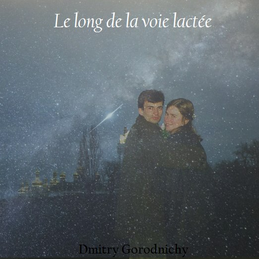

✴ ✵ ✶ 3 amour
(2000-2005)
Dmitry Gorodnichy & IVIM · « На нашем млечном пути » (Песни о любви) - «Le long de la voie lactée» (Chansons d'amour)
3.1 « На нашем млечном пути »
Песни о любви. Сторона Инь.
На украинском, русском, французском и английском.

3.2 Простое Искренее Чувство
Музыка и слова: ДГ
Мне приятно считать, что я очень обязан ей,
что незря мы гуляем с ней взявшись за руки,
что, наверно, мы с ней все же чем-то связаны
были, есть и будем до старости.
И пускай говорят, что в природе не вечно все,
Но я верю, что мы с тобой исключение -
Наши чувства бессмертны как этот Млечный Путь
Ты меня согреваешь своим свечением
Что-то есть незаметное для посторонних глаз
В этом лунном сиянии, в этом море трав.
И никто никогда не узнает, кроме нас,
что возможно сидеть вот так молча до утра.
1994
C C7+ C Dm
F6 Dm6 G C
C7 A A7 Dm
F6 Dm6 G C 3.3 Весна
Музыка и слова: ДГ
Грязь за окном –
Это признак лишь того, что весна
появилась, хитрых планов полна
относительно нaс.
Птицы поют –
подстрекатели любовных интриг,
выдавая свой пронзительный крик
за душевный рассказ.
И нам ничего не остается,
как поддаться на эти уловки,
ведь кто-то же мучался, кто-то старался,
создавая их для нас с тобой.
И вот мы смотрим друг на друга
и болтаем без остановки,
отчего-то наивно полагая,
что это случилось само собой.
Ты спрашиваешь -
чувствую ли я, как сердце стучит,
подбирая к нашим чувствам ключи,
как поет душа?
Да, я порой -
Слышу звуки из своей груди,
только я считал, что это гудит
у меня в ушах.
Всюду слышны поющие птицы -
Да так поют что сам запоешь.
И у людей лишь счастливые лица -
наверное им так удобней все ж.
Ну что же нам делать, куда же нам скрыться?-
Стрела Амура вонзает как нож
Придется, пожалуй, и нам влюбиться. -
Весна пришла, от нее не уйдешь...
1994
D /
/ A7
C A
D A A7
... D7
G D D7
G
D A A7 D 3.4 Альтист Данилов - Reverie
3.4.1 Альтист Данилов
Музыка и слова: ДГ
Я лежал и думал о тебе,
глядя как в небесной синеве
пролетали тучки-облака ...
подобно мыслям.
И хотелось оторваться мне
от обыденности на земле
и умчаться с ними далеко ...
к небесной выси.
Ну так в чем же дело? В добрый путь!
Кто тебе мешает в даль вгзлянуть?
Кто тебе мешает улететь -
в снах и мечтаньях?!
Мысли сами уведут тебя,
Если родились они любя,
Стоит только растворится в них -
было бы желанье.
Мне хотелось слиться скорее с дыханем птиц!
Мне хотелось скорее тебя найти!
Мне хотелось
yвидеть, что ты делаешь!!
И настолько сильно хотелось мне!
что почувствовав головокружение!
Я заметил...
под собою ветер.
И поплыли подо мной поля ,
Реки, уходящие в моря,
А за ними горные хребты,
меня касаясь.
Но меня тянуло вглубь лесов,
Где мелькнуло вдруг твое лицо.
Подлетаю - точно это ты ...
что-то читаешь.
Ты читала ``Альтист Данилов" Владимира Орлова.
19943.4.2 Reverie
Музыка и слова: ДГ
Lying on the grass, thinking about you,
I watched how in the sky of blue
there were clouds floating
like thoughts of mine.
And I wanted to get off the ground,
to get off this hassle, off this crowd
and to fly with them far, far away
to the heights of sky.
- So, what's the matter? Go ahead!
Who prevents from flying in your head?
Who prevents from looking far beyond ...
in dreams and reveries?!
And your thoughts will lead you to your goal
If they were born by real love.
You just have to melt away in them ...
All you need is a desire.
Yes,I wanted to merge with the breath of birds!
I wanted to find you on the earth!
I wanted to…
to see what you were going to do!
And so strong was the desire of mine to go!
that I felt dizziness and vertigo!
And I noticed ...
Wind below my feet.
And there were prairies below my knees,
Rivers taking their way into the seas,
And behind the seas the mountain peaks ...
with such a gorgeous look!
But I hurried up to that covert place
where I believed I'd seen your face
I flew down closer - it was really you…
You were reading a book.
You were reading ``Immortal wife” by Irving Stown.3.5 Місяць на небі
Музика и слова: ДГ
Mісяць на небі
місяць на небі горить
човником дивним
він через хмари летить.
серденько моє
як же нам бути з тобою
як же далеко
моя кохана тепер
моя любов,
моя любов,
моя любов, любов.
День проминає
і знову ніч настає
ті хто кохають
збережуть кохання своє
місяць мій друже,
ти віднеси в далечінь
через хмари і стужі
серце моє
коханій моїй,
коханій моїй,
коханій моїй,моїй.
Аккорды:
-------
G
Em
G Em
Еm Am
Am D
G Em
G Em
Am D7
Am D7
Am B7
Em A
Gm CBo Fo
C Am
C Am
Am Dm
C Am
C Am
Dm G
Dm G
Dm E
Am D
Cm F
G
3.6 Для нас с тобой - Pour toi et moi
3.6.1 Pour toi et moi
Pour toi et moi -
Tout sera bien
Pour toi et moi -
le temps ne changera rien
Pour toi et moi -
Tout restera comme avant
quand on s'aimait
et on croyait
que tout d’beauté du monde étais pour toi et moi.
Jour après jour -
Nous traverserons notre chemin
Main à la main –
Jusqu’au le fin
Qu'est ce que nous attend -
On sais jamais, mais pourtant
Même si nos jours
sont bien comptés, l'amour
va briller pour toujours comme la Voie Lactée.
1999-2001, 2014
Аккорды:
-------
D
D
Bm
Bm
B7
Еm A
F#m B
Em Em7 Em6 F#7 3.6.2 Для нас с тобой
У нас с тобой
будет всё хорошо.
у нас с тобой
не будет жизни другой.
у нас с тобой
все будет вновь как тогда,
где солнце греет
и сердце млеет,
и наполняется опять весной душа.
Пройдут года,
счастливым будет наш путь,
хоть никогда
нам наших лет не вернуть,
ведь каждый день на нашем млечном пути
для нас с тобою
озарен любовью,
и нашим счастьем будет этот путь пройти.
1999-2001
== Аккорды ==
G
G
Em
Em
B7
Еm A
F#m B
Em F#7
3.7 Bon jour, mon amour
Bonjour, mon amour
Réveille-toi, ma chéri
Commençons le jour
Avec ta main dans le mien.
Les oiseaux nous chantent.
Leurs chansons sont pour nous.
Bonjour, mon amour.
Mon étoile, ma bijou.
Le soleil brillant.
C’est le temps du bonheur.
Bonjour, mon amour,
Mon espoir, mon cœur.
2001
== Аккорды ==
A F#m
Bm E
A A7+
A7 D
D Dm
A F#
Bm E
Eaug A
A7 D
Dm A
Bm E
E7 A 3.8 Як же я тебе кохаю, в мажоре
Приспiв:
O, Як же я тебе кохаю,
Ти собі не уявляєш (x 2)
Хочу я тебе лиш тебе
Скоріш пригорнути до себе
Я навіть не маю і миті такої
Коли б не дишав би не жив би тобою.
Приспiв.
Життя без тебе нема
І все що роблю - дарма
Якщо я не поруч, не поруч з тобою
Якщо ти не поруч, не поручь зі мною
Приспiв.
Я бачу як сонце встає
Проміння його - то волосся твоє
І в сутінках срібних, і в зорях ночей
Я бачу відлуння твоїх ніжніх очей.
Приспiв.
Спасибі вам, друзі мої
Батьки, та мої вчителі
І вам, море й сонце, й тобі, синє небо
За те що мене привели ви до тебе
Приспiв.
Я знаю просто не зможуть слова
такі почуття передати вам
Який же я вдячний є долі своєї
за те що мене пов'язала з твоєю
Приспiв.
2001
== Аккорды ==
Dm G Am
Dm G C
Dm G
E7 Am
Dm G
C A7 3.9 Як же я тебе кохаю, в миноре
Приспiв:
O, Як же я тебе кохаю,
Ти собі не уявляєш (х 2)
Хочу я тебе лиш тебе
Скоріш пригорнути до себе
Я Просто не маю хвилини такої
Коли б не дишав би не жив би тобою
O, Як же я тебе кохаю,
Ти собі не уявляєш
Приспiв.
2001
== Аккорды ==
Dm Gm Dm
Dm Cm Am
Dm Am
Dm Am
Gm Dm
E A
Gm A7 Dm Gm A7 Dm
Gm A7 Dm 3.10 Tao d’amour - Тао Любви
3.10.1 Tao d’amour (La chanson de ceux qui se sont retrouvées)
Musique et paroles par Dmitry Gorodnichy
il:
Vivre sans toi c'est l'hiver
C'est la nuit étérnelle
il n'y a ni chaleur, ni lumière
Je suis comme un oiseaux sans les ailles
Pour te retrouver, ma chérie,
Je traversrait le galaxie.
Tu est la lune de mes nuits
la source de toute ma poésie!
elle:
La vie sans toi, mon chéri
n'a pas ni sens, ni couleurs.
Il n'en a pas d’harmonie
Je suis comme une arbre sans des fleurs
Pour te retrouver, mon amour,
je n'ai ni frontières, ni fatigue.
Tu es le soleil de mes jours,
la source de toute ma musique!
2014
== Аккорды ==
C C7+ Em Em7
Am Am7+ Fo E7
C C7+ G E7
Am Fo E E7
A A7 Gm A7
F F7+ Fo E7
Am Dm7 Am F
Dm7 Fo E
C C7+ F F7+
F F7+ Fo E7
Am Am7+ Fo E7(G#o)
F F7+ Dm7
B B7 E E7
E7 Fo G#o E7
Am Dm7 Am F
Dm7 E Am
3.10.2 Тао Любви (Песня нашедших друг друга)
Он:
Без тебя год – декабрь,
Словно ночи без снов,
Как без моря корабль,
Будто луг без цветов.
Верь, я ради тебя
На край земли б полетел!
Ты - как луна для меня
Единственный свет в темноте!
Она:
Милый ты мой, родной,
Всё без тебя не так,
Мир беззвучный, пустой,
И нет смысла в словах.
Верь, тебя я найду
Где бы ты ни был, пойми!
Все берега обойду:
Ты - мое солнце, мой мир!
2014
== Аккорды ==
A A7+ C#m C#m7
F#m F#m7 C## C#7
A A7+ E Fo
F#m Fo C## C#7
F## F#7 Em Eo
D7+ D Do C#7
F#m Hm7 F#m D
Fo G#0 C## C#7
A A7+ D7+
D D7+ Fo Do(C#7)
F#m F#m7+ Do Fo
D D7+ Em/Hm7
G G7 C## C#7
C#7 Do Go
F#m Hm7 F#m D
Hm7 C#7 F#m3.11 Air to breath
maybe it's also the reason
why the skies are so blue
this is because you are not with me
and I cannot live without you
world is so empty without you
everything looks the same
in all the sounds around me
I can hear the echoes of your name
ты моё солнце
ты моё спасение
Ты моя надежда
на выздоровление
ты моя
самая
нужная
ты мой талисман,
анастезиолог
без тебя век
мой был бы не долог
Ты моя
земля моя
Воздух мой
Да я без тебя
мог бы задохнуться
Я бы мог уйти
и внезапно не вернуться
ночью без тебя
я могу и не проснуться
до рассвета мне
мне не дотянуться
maybe it's also the reason
why it's raining all day
this is because you're not with me
and life without you is such a pain
Nothing's exciting without you
above or beneath
that's like you’ve taken with you
all the air and I can't breathe
ты моя решимость,
смелость, вдохновение
сложных всех задач
ты моё решение
ты моя
самая
главная
главная удача
главная награда
в жизни без тебя
ничего не надо
Ты моя
самая
любимая
только с этим словом тут не подойдёшь
ведь нельзя любить то без чего умрёшь
ты как воздух мне нужна, как легкие
ты есть жизнь моя, мое сознание!..
2001-20103.12 Because you never know - Parce qu’on sait jamais
3.12.1 Because you never know
(*) Because you never know,
because you never know
There's something about
the nature of love
because you never know.
(*)
There's something about
The magic of love
because you never know.
(*)
Wake up in the morning
and look in the mirror
You'll see what love can do!
(*)
There's something about
the beauty of love
And that's how you will know!
(*)
Just live every moment
And seize every minute
because you never know …
2001
(*)
Whenever in doubt
Go out to find out
There’s so much around!
(*)
If you feel alone
Look up to the sky
The stars will lead you home!
2014
== Аккорды ==
E C#m
E F#m
E C#m
G#m C#m
F#m Hm 3.12.2 Parce qu’on sait jamais
Parce qu'on sait jamais
Parce qu'on sait jamais
l'amour c'est une magie
et on sait jamais
À quoi elle nous transféra
Parce qu'on sait jamais
Parce qu'on sait jamais
regarde dans le miroir
là tu découvriras
qu'est-ce que l'amour a fait en toi
Parce qu'on sait jamais
Parce qu'on sait jamais
Vivre chaque ton seconde
chaque moment - carpe diem,
maintenant tu sais pourquoi
parce qu'on sait jamais
Parce qu'on sait jamais
si tu te sens perdu
regarde dans le ciel
les étoiles monteront route chez toi
Parce qu'on sait jamais
parce que on sait jamais
quand tu ne sais pas
où tu dois aller
vas-y où ton cœur t'amènes...